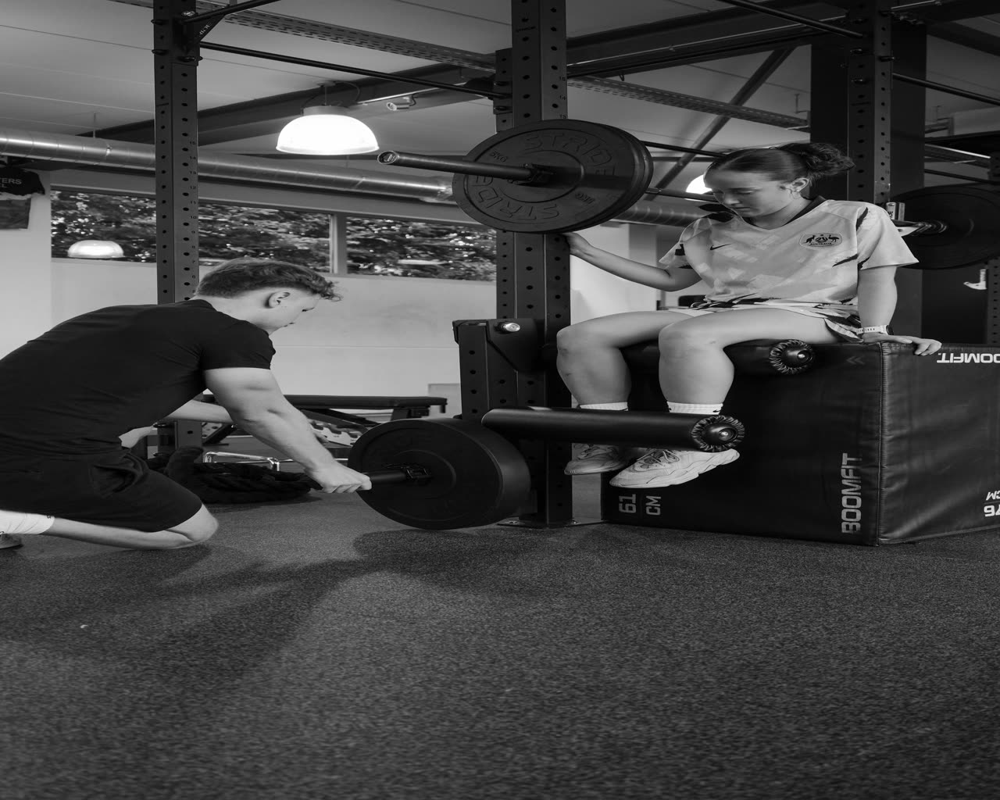

Behandeling
Manuele therapie
& kinesitherapie
Voor pijn die vastzit in een gewricht of een spier. We onderzoeken eerst waar de klacht vandaan komt en werken daarna met de hand: mobilisaties, weke delen, dry needling waar dat zin heeft.
Mobilisaties, manipulaties en dry needling verlagen je pijn, halen spanning uit de spier en geven je gewricht zijn beweeglijkheid terug. Geen recept van de plank: de techniek volgt de diagnose.
Plan een onderzoek